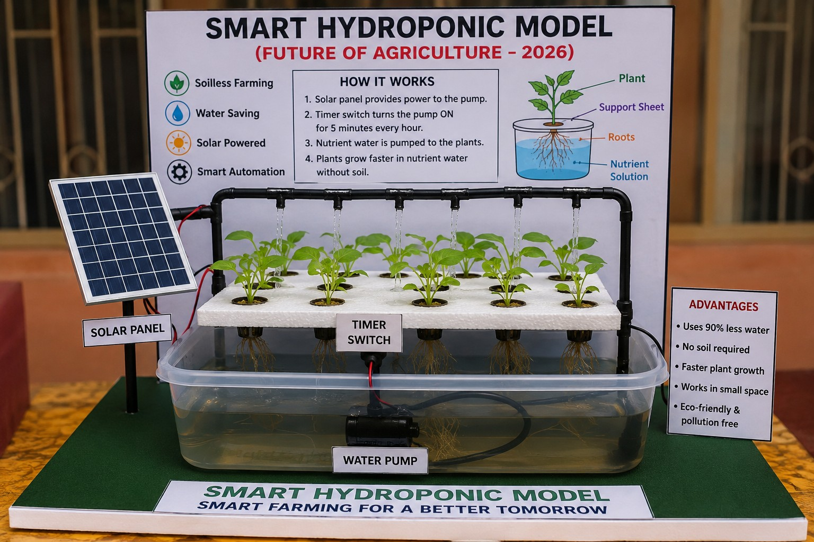

Future of Agriculture – Smart Farming for a Better Tomorrow

Hydroponics is a method of growing plants without soil. The roots receive water containing the nutrients needed for healthy plant growth.
To demonstrate a soil-less farming system that can save water, use limited space efficiently and support sustainable agriculture using smart automation and solar energy.
The model can be upgraded with an ESP32/Arduino, water-level monitoring, pH monitoring, nutrient (TDS/EC) monitoring, temperature/humidity sensing, automatic alerts and a live online dashboard.
This digital page is designed to accompany the physical Smart Hydroponic Model. Judges and visitors can scan the QR code to explore the project without needing a printed explanation for every section.